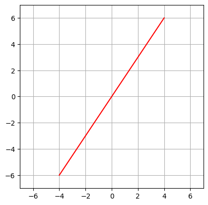

Show code cell source
from IPython.core.display import HTML as Center
Center(""" <style>
.output_png {
display: table-cell;
text-align: center;
vertical-align: middle;
}
</style> """)
2. Linear algebra - crash course#
We will start by recalling from linear algebra the definition of a vector space and a linear map. These notion will be crucial in the definition and interpretation of group representations that we will introduce in the following lectures.
2.1. Vector spaces#
Definition (Vector space)
A vector space over a field \(\mathbb{F}\) (\(\mathbb{R}\) or \(\mathbb{C}\)), is a set \(V\) together with two operations: vector addition and multiplication by scalar, that satisfy the following axioms:
vector addition is commutative: \(v+u=u+v\) for all \(u,v\in V\)
vector addition is associative: \((v+u)+w=v+(u+w)\) for all \(v,u,w\in V\)
vector addition has an identity element (zero vector 0) satisfying \(v+0=0+v=v\) for all \(v\in V\)
vector addition has inverses: for all \(v\in V\) there exists \(u\in V\) such that \(v+u=u+v=0\)
\(\lambda(\mu v)=(\lambda\mu)v\) for all \(\lambda,\mu\in\mathbb{F}\) and \(v\in V\)
\(\lambda(v+u)=\lambda v+\lambda u\) for all \(\lambda\in\mathbb{F}\) and \(v,u\in V\)
\((\lambda+\mu) v=\lambda v+\mu v\) for all \(\lambda,\mu\in\mathbb{F}\) and \(v\in V\)
\(n\)-dimensional Euclidean spaces are the most familiar examples of vector spaces. However, there are a lot more spaces and operations that satisfy these axioms.
Examples (Vector space)
\(\mathbb{F}=\mathbb{R}\), \(V=\mathbb{R}^n\) is a vector space over real numbers
\(\mathbb{F}=\mathbb{C}\), \(V=\mathbb{C}^n\) is a vector space over complex numbers
the set \(M_{n\times m}(\mathbb{R})\) of all \(n\times m\) matrices is a vector space
We will be dealing mostly with finite dimensional vector spaces in these lectures. In such a case, we can introduce the notion of a basis of a vector space. We start by defining what we mean by linearly independent vectors:
Definition (Linearly independent vectors)
Let \(V\) be an \(n\)-dimensional vector space and let \(v_1,v_2,\ldots,v_k\in V\) be vectors. Then we say that these vectors are linearly independent if the vector equation
has only the trivial solution \(\alpha_1=\alpha_2=\ldots=\alpha_k=0\).
Example (Linearly independent vectors)
Let us take \(V=\mathbb{R}^2\) and take three vectors \(v_1=\begin{pmatrix}2\\3\end{pmatrix}\), \(v_2=\begin{pmatrix}-1\\1\end{pmatrix}\) and \(v_3=\begin{pmatrix}2\\-2\end{pmatrix}\). One can show that vectors \(v_1\) and \(v_2\) are linearly independent since
and to have \(\alpha_1 v_1+\alpha_2 v_2=0\) we need to solve two equations:
The only solution is \(\alpha_1=\alpha_2=0\).
On the other hand, vectors \(v_2\) and \(v_3\) are not linearly independent (therefore they are linearly dependent), since for example \(2v_2+v_3=0\).
Finally, we can define a basis of a vector space as
Definition (Basis of vector space)
Let \(V\) be an \(n\)-dimensional vector space. Any set of \(n\) linearly independent vectors \(v_1,v_2,\ldots , v_n\) in \(V\) is called the basis of \(V\).
Importantly, given a basis \(v_1,v_2,\ldots,v_n\) of a vector space \(V\), it is possible to expand any other vector \(v\in V\) as a linear combination of these basis vectors. Such linear combination is unique.
Example (Basis of vector space)
Let us take \(V=\mathbb{R}^2\). We showed that the vectors \(v_1=\begin{pmatrix}2\\3\end{pmatrix}\) and \(v_2=\begin{pmatrix}-1\\1\end{pmatrix}\) are linearly independent. Therefore, \(v_1\) and \(v_2\) form a basis of \(\mathbb{R}^2\). Any other vector in \(\mathbb{R}^2\) can be written as a linear combination of these two vectors. For example, let us take \(v=\begin{pmatrix}5\\7\end{pmatrix}\). Then
2.2. Linear subspaces#
When discussing representation theory, we will often consider a vector space of some dimension \(n\), and will be interested in its linear subspaces. If \(V\) is a vector space over a field \(K\) and if \(W\) is a subset of \(V\), then \(W\) is a linear subspace of \(V\) if under the operations of \(V\), \(W\) is a vector space over \(K\). This can be illustrated by the following example
Example (Linear subspace)
Let \(V=\mathbb{R}^2\), and let us define a subset of \(V\): \(W=\{(x,y)\in \mathbb{R}^2:-3x+2y=0\}\). Then \(W\) is a vector space and therefore a linear subspace of \(V\). Since the elements of \(W\) are just the 2-dimensional vectors, then the axioms of vector spaces are easily satisfied. The only thing that we need to check is whether \(W\) is closed under vector addition and multiplication by a scalar. Let us first notice that all element of \(W\) can be written as
We start by checking that \(W\) is closed under vector addition. Let us take \(w_1,w_2\in W\). Then we can write them as \(w_1=(x_1,\frac{3}{2}x_1)\) and \(w_2=(x_2,\frac{3}{2}x_2)\) for some \(x_1,x_2\in \mathbb{R}\). Then
for \(x_3=x_1+x_2\). Therefore \(w_1+w_2\in W\).
Similarly, we can check that \(W\) is closed under the multiplication by a scalar. Let us take \(w\in W\) and \(\lambda\in \mathbb{R}\). Then \(w=(x,\frac{3}{2}x)\) for some \(x\in\mathbb{R}\) and
for \(x'=\lambda x\in \mathbb{R}\). Therefore, \(\lambda w\in W\).
It is also easy to find a basis of \(W\). Since \(\dim(W)=1\) then it is sufficient to find a single linearly independent vector. As an example we can take \(w=(2,3)\).
Moreover, the linear subspace \(W\) can be easily visualized on a real plane (that is \(\mathbb{R}^2\)). It is just the straight line in the picture below
Show code cell source
import matplotlib.pyplot as plt
import numpy as np
point_1 = [4,6]
point_2 = [-4,-6]
ax = plt.gca()
ax.set_aspect('equal', 'box')
ax.grid()
ax.set_xlim(-7,7)
ax.set_ylim(-7,7)
x_values = [[point_1[0]],[point_2[0]]]
y_values = [[point_1[1]],[point_2[1]]]
plt.plot(x_values, y_values, 'red')
plt.show()

2.3. Direct sum of linear subspaces#
One additional notion from linear algebra that will be very useful to us is a direct sum of vector spaces.
Definition (Direct sum of vector spaces)
Let \(V\) be a vector space over the field \(\mathbb{F}\). Let \(W_1\) and \(W_2\) be two linear subspaces of \(V\). We define the direct sum \(W_1\oplus W_2\) of \(W_1\) and \(W_2\) as
2.4. Linear maps#
Finally, we recall the notion of a linear map between two vector spaces:
Definition (Linear map)
Let \(U\) and \(V\) be vector spaces over the field \(\mathbb{F}\). Then \(f:U\to V\) is called a linear map if
\(f(u+v)=f(u)+f(v)\) for all \(u,v\in U\)
\(f(\lambda u)=\lambda f(u)\) for all \(\lambda\in \mathbb{F}\) and \(u\in U\)
Examples (Linear map)
The identity map \(id_U:U\to U\) is a linear map
For an \(n\times m\) real matrix \(A\), we can define a map: \(T_A:\mathbb{R}^n\to\mathbb{R}^m\) as \(T_A(v)=A\cdot v\). Then \(T_A\) is a linear map.